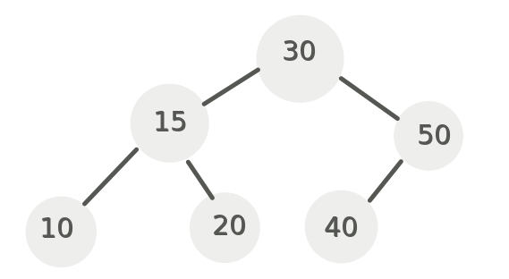
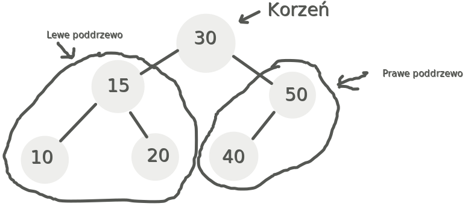
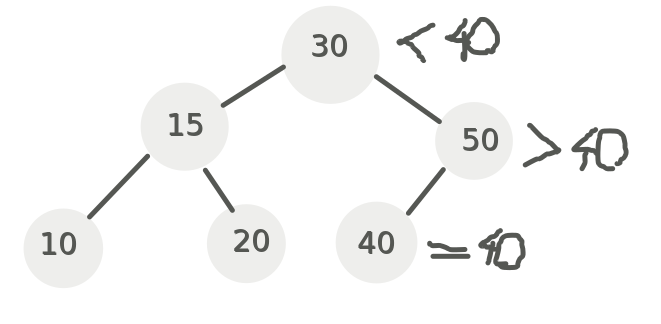
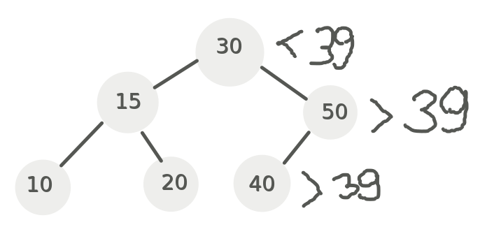
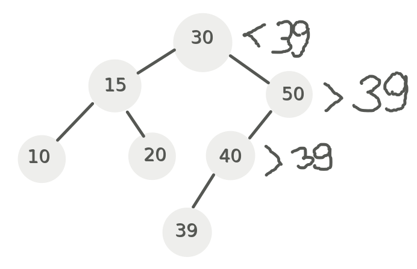

Binarne Drzewo Poszukiwań

Binarne drzewo poszukiwań to struktura danych oparta na tworzeniu połączeń każdego z węzłów z maksymalnie dwoma potomkami.
Lewy potomek jest zawszę mniejszy od rodzica, a prawy większy.

Jak można zauważyć w lewym poddrzewie mieszczą się wszystkie wartości mniejsze od korzenia i analogiczni w prawym większe,
co ułatwia przeszukiwanie wartości gdyż za pomocą jednego porównania można wykluczyć z poszukiwania nawet połowę z posiadanych wartości.
Powoduje to też że łatwo znaleźć największą wartość która będzie znajdować się na skrajnym prawym liściu i analogiczne najmniejszą.
Operacje
Szukanie: aby wykonać dowolną operacje w drzewie najpierw trzeba znaleźć odpowiednie miejsce lub element.
Przeszukiwanie drzewa BST postępuje według schematu:

Jeśli szukamy wartości 40 to najpierw porównujemy ją z korzeniem czyli 30 od którego jest większy, więc idziemy w prawo.
Od prawego potomka 40 jest mniejsze więc idziemy w lewo. Przy pomocy przyrównania 40 = 40 odnajdujemy rzeczony element.

W przypadku wartości która nie występuje w drzewie droga wygląda analogicznie oprócz ostatniego przypadku.
Kiedy dochodzimy do 40 nie ma już możliwości przejścia do jego lewego potomka, oznacza to że w drzewie nie ma takiej wartości.
Dodawanie wartości: Aby dodać wartość najpierw musimy sprawdzić czy w drzewie nie ma jeszcze takiej wartości posługując się operacją szukania.
Jeśli znaleźliśmy wartości dodajemy ją zgodnie z zasadą tworząc prawego lub lewego potomka.

Usuwanie wartości: Problemy zaczynają się przy usuwaniu wartości. Jeśli wartość którą chcemy usunąć jest liściem to nie ma problemu, postępujemy jak w poprzednich przypadkach. Ale jeśli posiada potomków, albo co gorsza jest korzeniem to sprawa się komplikuje. W takim przypadku wybieramy wartość najbliższą usuwanej. W przypadku usunięcia 30 może to być 20 albo 39. Aby znaleźć takiego następce należy kierować się raz w prawo i cały czas w lewo aby znaleźć najbliższą większą wartość, albo raz w lewo i cały czas w prawo żeby znaleźć najbliższą mniejszą wartość. Jeśli szukana wartość również posiada potomka to postępujemy analogicznie szukając zastępcy.
Nasuwa się tu więc rekurencyjne rozwiązanie problemu usuwania.